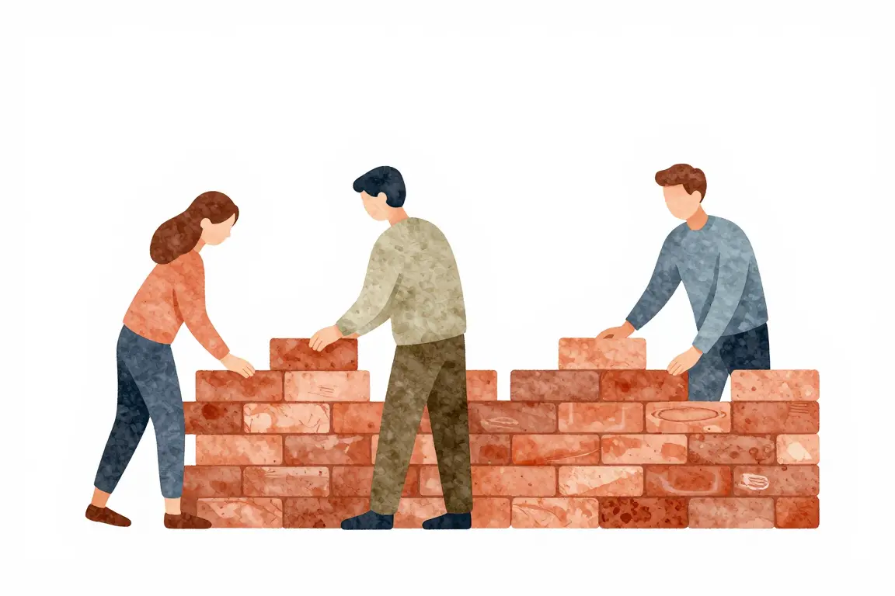
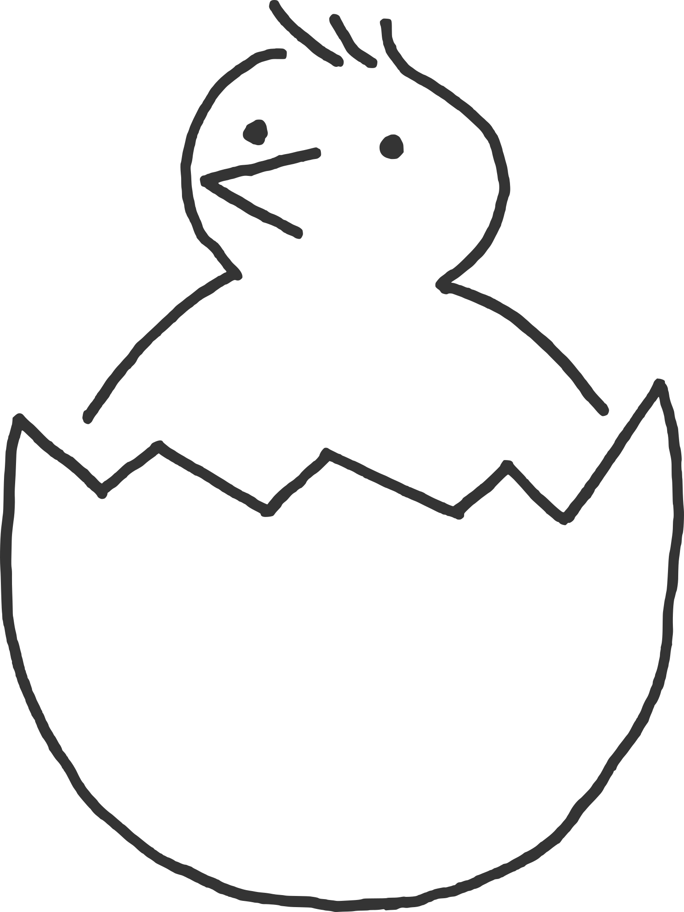

Projekty jako první praxe#
Kapitola se teprve připravuje.


Nic tě nenaučí tolik, jako když si zkusíš něco samostatně vyrobit. Říká se tomu projektové učení. Nejlepší je vymyslet si něco vlastního a řešení procházet s mentorem. Inspirace na projekt se nejlépe hledá přímo okolo tebe:
- Jednoduchá hra, např. piškvorky nebo had,
- automatizace něčeho, co teď na počítači musíš dělat ručně (mrkni na tuto knihu),
- program na procvičování příkladů nebo slovíček pro děti do školy,
- osobní webová stránka.
Pokud vlastní nápad nepřichází a mentor není po ruce, můžeš zkusit hackathon nebo open source.

Junioři si často udělají kurz, certifikaci, ale potom už tu znalost neprocvičují. A to je strašná škoda, protože ji do pár měsíců zapomenou. Lepší méně kurzů, ale potom začít praktikovat a něco si vytvořit. Nákupní seznam, jednoduchého bota, malou aplikaci.
Na inzerát bytu k pronájmu, u kterého nejsou fotky, nikdo odpovídat nebude. Stejně je to i s kandidáty. Potřebuješ ukázat, že umíš něco vyrobit, dotáhnout do konce, že máš na něčem otestované základní zkušenosti z kurzů a knížek. K tomu slouží projekty. Pokud nemáš vysokou školu s IT zaměřením, kompenzuješ svými projekty i chybějící vzdělání. Snažíš se jimi říct: „Sice nemám školu, ale koukejte, když dokážu vytvořit toto, tak je to asi jedno, ne?“
Říká se, že kód na GitHubu je u programátorů stejně důležitý, ne-li důležitější, než životopis. Není to tak úplně pravda. U zkušených profesionálů je to ve skutečnosti velmi špatné měřítko dovedností. Náboráři se na GitHub nedívají, maximálně jej přepošlou programátorům ve firmě. Přijímací procesy mají většinou i jiný způsob, jak si ověřit tvé znalosti, např. domácí úkol nebo test. Zajímavý projekt s veřejným kódem ti ale může pomoci přijímací proces doplnit nebo přeskočit. Dokazuje totiž, že umíš něco vytvořit, že umíš s Gitem, a tví budoucí kolegové si mohou rovnou omrknout tvůj kód. Člověk s projekty skoro jistě dostane přednost před někým, kdo nemá co ukázat, zvlášť pokud ani jeden nebudou mít formální vzdělání v oboru.
Konkrétně GitHub s tím ale nesouvisí. Stejný efekt má, pokud kód vystavíš na BitBucket nebo pošleš jako přílohu v e-mailu. Když někdo říká, že „máš mít GitHub“, myslí tím hlavně to, že máš mít prokazatelnou praxi na projektech. GitHub je akorát příhodné místo, kam všechny své projekty a pokusy nahrávat. Nahrávej tam vše a nestyď se za to, ať už jsou to jen řešení úloh z Codewars nebo něco většího, třeba tvůj osobní web. Nikdo od tebe neočekává skládání symfonií, potřebují ale mít aspoň trochu realistickou představu, jak zvládáš základní akordy. Budou díky tomu vědět, co tě mají naučit.
Pokud se za nějaký starý kód vyloženě stydíš, můžeš repozitář s ním archivovat. Jestliže se chceš nějakými repozitáři pochlubit na svém profilu, můžeš si je tam přišpendlit. Výhodou je, že přišpendlit jde i cizí repozitáře, do kterých pouze přispíváš.
Na pohovoru mě nezajímá, co kdo vystudoval, ale jak přemýšlí a jaké má vlastní projekty. Nemusí být nijak světoborné, je to však praxe, kterou ani čerstvý inženýr často nemá.
Máš-li za sebou nějakou vysokou školu z oboru, ukaž svou bakalářku nebo diplomku. Je to něco, co je výsledkem tvé dlouhodobé, intenzivní práce. Pochlub se s tím!

Máš otázky? Chceš probrat svou situaci?
Na junior.guru Discordu si pomáhá 257 lidí, které zajímá svět IT juniorů. Začátečníci, kteří hledají komunitu a podporu. Senioři s chutí sdílet své zkušenosti. K tomu pravidelné online akce a mnoho dalšího.
Konkrétně v kanálu #výtvory se v poslední době napsalo 5.850 písmenek měsíčně.